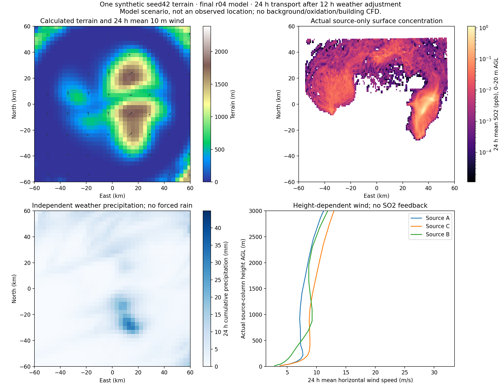

One irregular terrain.
One continuous day.
Seed42 synthetic mountain experiment. The final r04 computation and volume renderer are retained. New terrain, hypothetical source sites and case-specific initial/boundary conditions; no imported Vancouver city.
Terrain seed42
Continuous source period24 h
Terrain maximum1,846 m
Native surface maximum4.556 ppb
Display-region rain total3.154 mm
Actual source particles33,240
Source increments only; background is excluded. These are model-layer/cell means, not observed exposure measurements. The surface maximum is selected across all24 hourly native frames and the full regional grid.

Actual new case fields. White concentration cells are zero. Native grids are shown without artificial texture detail.
Actual mass budget
Global native accounting in kg, including transport outside the displayed regional box. No age termination, hidden deletion or background mass. Total residual: 1.103e-07 kg.
How it was calculated
Terrain
The fixed seed42 coefficients define eleven rotated hills, eight resolved long-wave modes and a curved valley. The artificial relief fades by55 km; the retained outer terrain blends in over60–85 km. This modifies the actual model HGT, not just a mesh.
One continuous day
Weather begins4 Nov2026 at18:00 UTC. Source transport runs5 Nov06:00 to6 Nov06:00 UTC after12 h adjustment. The same frozen GFS scenario is reused; this is not a new November10 geographic forecast.
Passive three-dimensional transport
The resolved u,v,w vary horizontally, vertically and with time. FLEXPART supplies its native stochastic turbulence. SO2 has no wind feedback. The same9/3 km,50-level weather model is retained; this is not building CFD or the unqualified5 m LES.
Finite-density thermal rise
M is carrier mass flux (kg/s), b plume radius (m), rho air density (kg/m3), v carrier velocity and n its unit axis. This is the final website integral entrainment closure; its coefficients were not fitted to this terrain.
Momentum and heat
Particles originate on the specified outlet disks. The integral solution supplies parameterized buoyant displacement/spread while native transport uses the actual wind. It is one-way parameterized heat/entrainment, not resolved hot-jet flow.
Mass accounting
All24 actual hourly fields pass finite/nonnegative pollution, exact ZERO and native global budget checks. Regional cumulative deposition never exceeds the global deposition ledger. Tiny negative weather condensate traces remain unmodified.
Native units
Surface queries use the actual0–20 m layer means. Cumulative deposition is the final snapshot, not a sum of snapshots. Full-period means average24 actual one-hour intervals.
Scalar playback
Twenty-four physical hours play in15 seconds by default, with adjustable speed. Scalar values are decoded before interpolation. No rendered-frame crossfade, RGB blending, texture smoke or invented additional pollutant is used.
What remains approximate
Three sites and five flues inherit the final website emission, outlet and thermal priors; they are not inventories for these fictional sites. Common forest/soil conditions are prescribed inside the artificial patch. The same private WRF-compatible JAX implementation, Noah-MP4 and native CPU FLEXPART are used. GPU weather and batched plume integration do not make the whole chain GPU-only.
The3 km weather grid and parameterized turbulence cannot resolve individual building wakes or small eddies. Fine96³ residence bins do not establish near-nozzle engineering accuracy or particle convergence. Twelve-hour adjustment is not proof of complete spinup. SO2 oxidation and background inflow are absent. Prior2 mm GPU/CPU consistency evidence is not a synthetic-terrain observation-error bound.
Data and code
Full shared model methods and earlier qualification evidence ↗